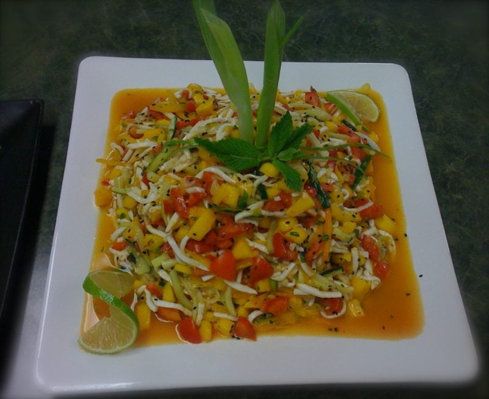

Thai Fruit Salad

~ raw, vegan, gluten-free, nut-free ~
I developed this recipe while my husband and I were attending Living Light Raw Culinary Art Institute. One of our assignments was to go home after a full day of school and create a recipe for our ethnic class.
This course was designed to teach us how to convert cooked recipes into raw. The next phase told us what ethnic region it needed to come from. Then we were given the opportunity to choose whether we wanted to create an appetizer, a salad, a main course, a soup, or a dessert recipe.
Then to challenge us even further we were given a list of foods that would only be available to us to use. So, after a good 8 hour day of school, with school books in arm, we would head to our home away from home and spend a good 2-3 hours trying to create a new recipe.
The next day the teacher would ask who created an appetizer recipe? All those who created a recipe for an appetizer would have to stand up before the class and read off their recipe ingredients. After everyone who created an appetizer had shared their creation with the class, it was then voted on which one we would make. This process took place for each course. When it came to salads, mine was voted on to make. We would then select a team of 4 people for each course, grab our knives and head to the kitchen. We had to make the recipe, tweak as we went to make it good and make enough for 32 servings. It was quite an exercise. So, this is my salad…
Ingredients:
Yield: 16 cups
- 4 cups coconut noodles or zucchini noodles
- 5 cups diced mango
- 3 cups diced & seeded tomato
- 3 cups thin julienne cucumber
- 1 cup thin julienne yellow pepper
- 4 green onions (diced on a diagonal)
- 1/2 cup fresh cilantro (finely chopped)
- 1/2 cup fresh lime juice
- 2 Tbsp sesame seeds
- 2 garlic cloves, crushed
- 1 tsp Himalayan pink salt
- 2 Tbsp rice wine
Preparation:
- Cut 4 cups of coconut noodles and place in large bowl. Use zucchini noodles if coconut noodles aren’t available.
- Dice mango and tomatoes and add to bowl.
- Thin julienne cucumber and yellow pepper, add to bowl.
- Thinly dice on a diagonal the green onion, add to bowl.
- Add the remaining ingredients; cilantro, lime juice, sesame seeds, garlic, salt and rice wine.
- Mix gently. Garnish with fresh cilantro leaves and a few more sesame seeds.
- Store in fridge.
© AmieSue.com